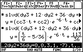
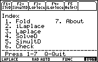
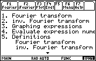

Download Area
Advanced Math for Engineers
I've gathered in this page those programs for TI calculators, which I consider useful for engineering students. If you are one, I recomend you to check out these programs. Please, do not spread these programs other sites without permission of the authors.
Differential Equations and Laplace Transforms
| Software: Diff Eq 2.06 |
Last updated in this site: November 17, 2002. |
Author's name: Lars Frederiksen |
 Description by the author (Lars Frederiksen): This package is primary designed to solve high order differential equations. There are two functions for those purposes: a single and a simultaneous equation solver. The single equation solver will solve a long range of different types of equations. As a speciality it has the ability to solve literary all Linear (non) homogeneous and Euler equations up to an order of 9. The simultaneous solver will solve systems of two or more Linear equations of any order using Laplace transformation. The package does also include functions for basic Laplace / inverse transformation (these functions does not support Delta/Heaviside function or more advanced transforms). It includes an archiver application. |
Comment by Perez-Franco: I am an asiduous user of this program. I consider it the most advanced math program ever created for any calculator. This small program can solve advanced math problems that could give even an advanced math programs on a PC a nice headache. And it works fast and accurately! This program is required by the latest versions of Symbulator, but even if you don't use Symbulator, I recommend you to get this program: it is a must! |
Documentation: Included in *.html |
Download it! Compressed in .zip format. |
| Software: Advanced Laplace 1.4 |
Last updated: November 4, 1999. |
Author's name: Lars Frederiksen |
 Description: This package contains functions for solving single or multiple differential equations with constant coefficients. Differential equations can be of any order and complexity. The functions have also the ability to find the solutions of most integral equations or combinations of differential and integral equations (integro-differential equations). Method used: Laplace-transformation. This package does also contain functions for Laplace-transformation. The difference from the program above is that Advanced Laplace has more advanced Laplace capabilities. |
Specifications: Written in TI Basic to run in TI-89. Documentation: Complete. |
Download it! Compressed in .zip format. |
Fourier Transforms / Fourier Coefficients
| Software: Fourier 3.30 |
Last updated: November 24, 1999. |
Author's name: Lars Frederiksen |
 Description: This packet contains functions to perform Fourier-/inverse Fourier-transformation. A function, which can rewrite the output of Fourier/iFourier to a form that, can be evaluated numerical. A function to graph the output. It will now do cyclic (v(t) <-> V(f)) as well as angular (f(t) <-> F(w)) frequency transformations. It will now do cyclic (v(t) <-> V(f)) as well as angular (f(t) <-> F(w)) frequency transformations. |
Specifications: Written in TI Basic to run in TI-92/TI-92II and TI-89/TI92+. Documentation: Complete. Included in .doc and .pdf |
Download it! Compressed in .zip format. |
| Software: Fourier Function |
Last updated: May 24, 1999. |
Author's name: Erwin Baert |
Description: Fourier is a function to calculate the fourier coefficients for any function piecewise continues in any number of intervals. The startpoint and endpoint do not have to be a function of pi. Any value is accepted. |
Specifications: Written in TI Basic to run in TI-89. Documentation: Brief. |
Download it! Compressed in .zip format. |
| Software: Fourier Coefficients |
Last updated: June 2, 1999. |
Author's name: Roberto Perez-Franco |
Description: Contains three functions to calculate the fourier coefficients for any function with 1, 2 or 3 intervals. The startpoint and endpoint do not have to be a function of pi. Any value is accepted. |
Specifications: Written in TI Basic to run in TI-89. Documentation: Brief. |
Download it! Compressed in .zip format. |
Infinite Series
| Software: Series Convergence 2.0 |
Last updated: December 21, 1999. |
Author's name: Jesse Lai |
Description:
This program runs on the TI-89 and can run several different tests on |
Specifications: Written in TI Basic to run in TI-89. Documentation: Brief. |
Download it! Compressed in .zip format. |
Matrices
| Software: Inv 1.10 |
Last updated: July 22, 2000. |
Author's name: Rafael Humberto Padilla Velázquez |
Description: This program inverts matrices fast and accurately using the ANA method. |
Specifications: Written in TI Basic to run in TI-89 and TI-92+. Documentation: Brief, in txt. |
Download it! Compressed in .zip format. |
Trigonometry
| Software: tSimplfy 3.00 |
Last updated: March 22, 2001. |
Author's name: Brett Sauerwein |
Description: This function simplifies messy trigonometric expressions from the CAS into simpler results involving cosecant, secant, and cotangent. |
Documentation: Included, in .doc |
Download it! Compressed in .zip format. |
Calculus
| Software: FDI 2.40 |
Last updated: June 12, 2003. |
Author's name: Mads Soendergaard |
Description: FDI, Faster analytical evaluation of Definite Integrals, evaluates some definite integrals faster. FDI is also capable of evaluating some classes of definite integrals that the TI-OS can’t evaluate. |
Documentation: Included, in .doc |
Download
it! |